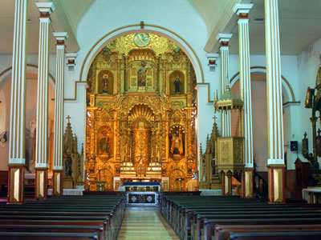

Sitios Turísticos
categoría
Ordenado por:
- localización
- Precios
- Transporte
- Horario

Iglesia de San José Altar de Oro
Panamá, Panamá, Casco Antiguo
Plaza de Francia
Panamá, Panamá, Casco Antiguo
Museo Católico
Panamá, Panamá, Casco Antiguo